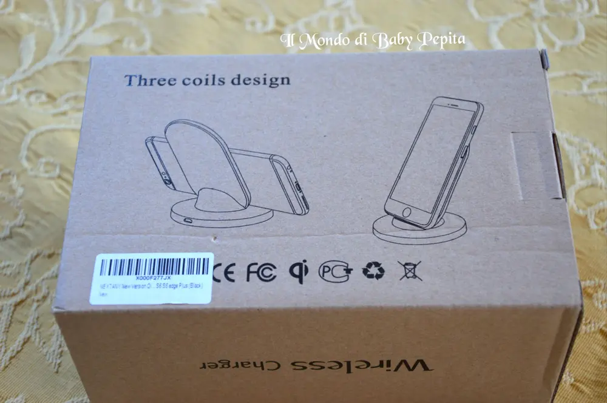
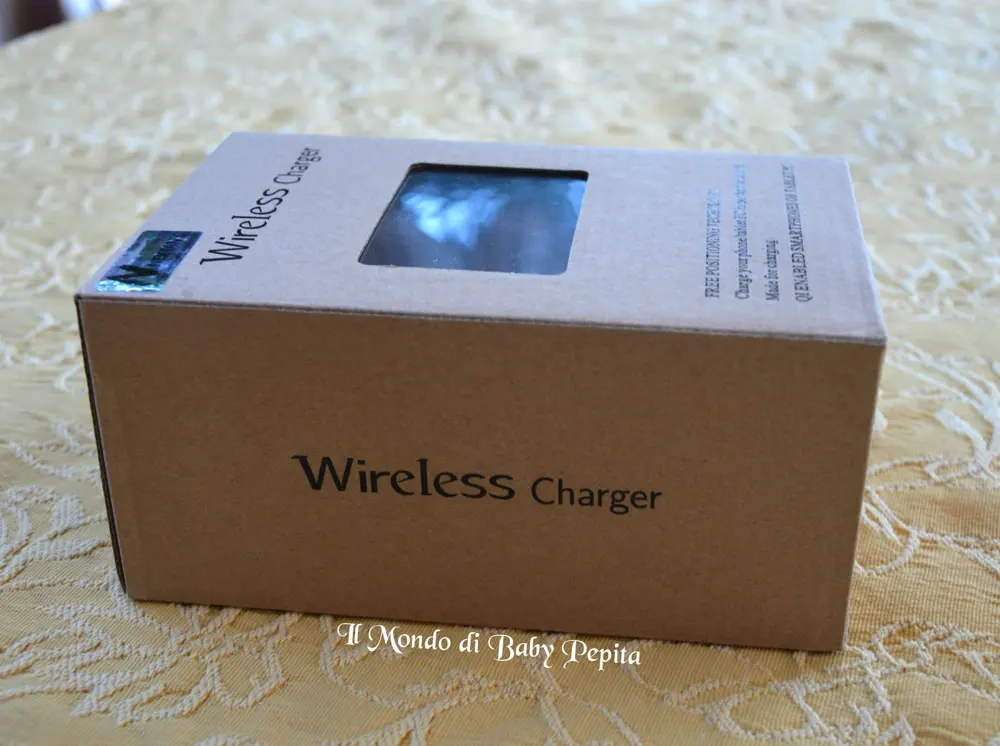
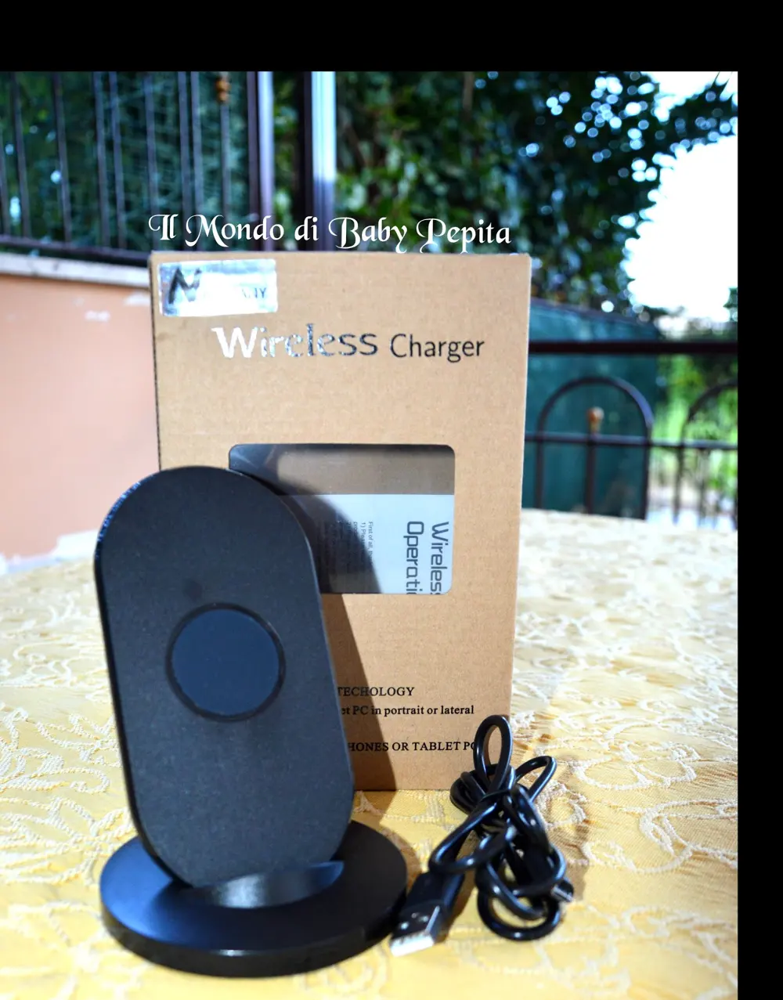
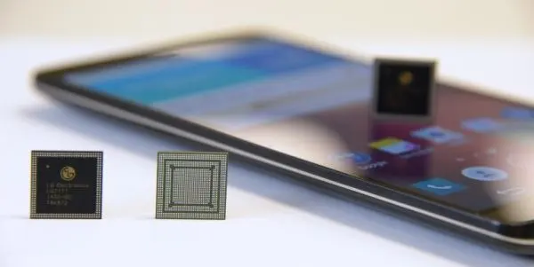
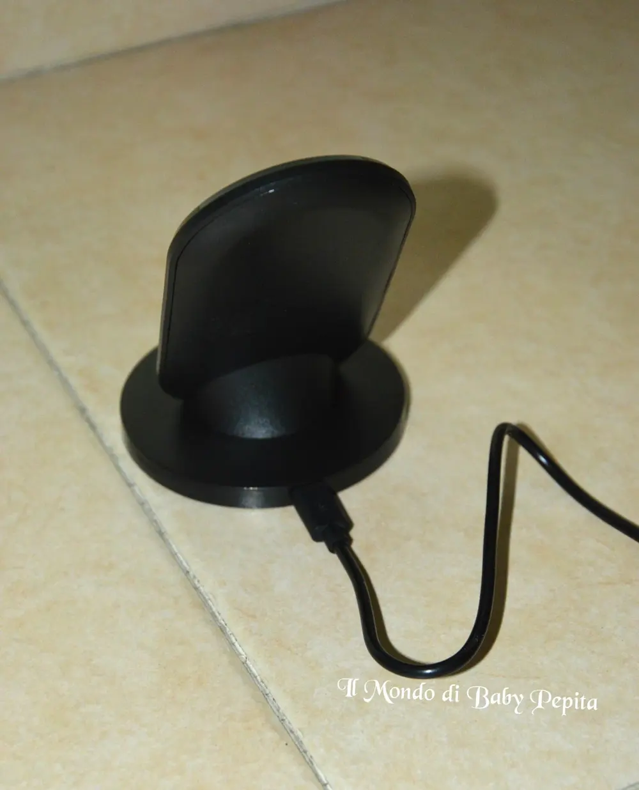
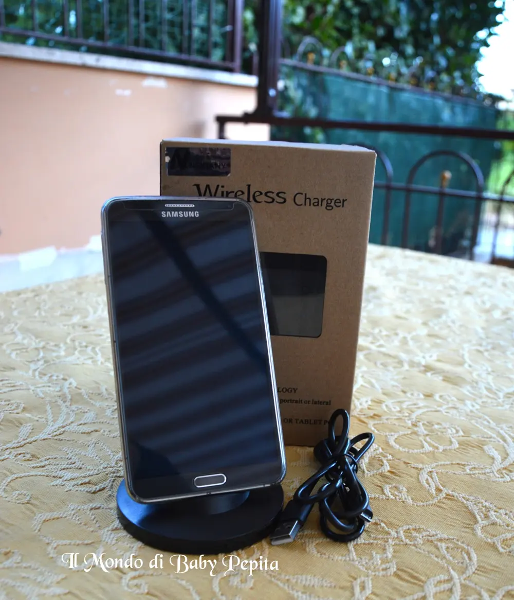
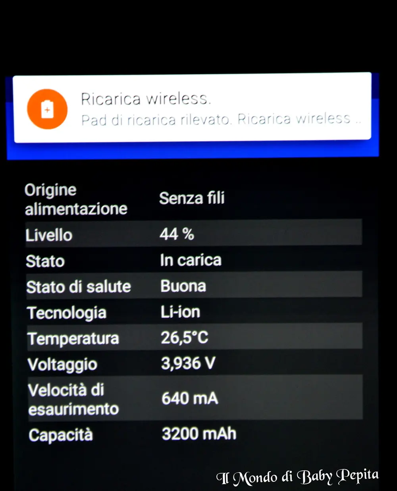
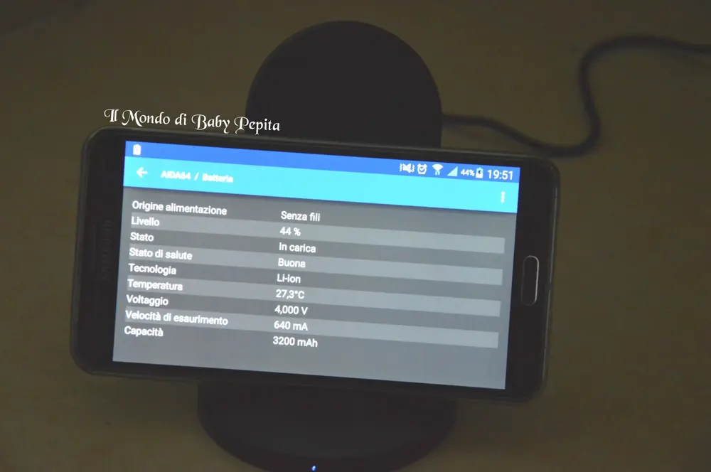
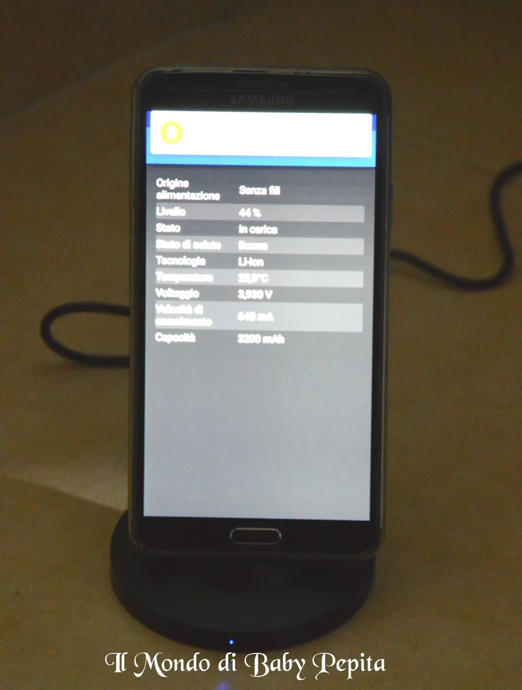
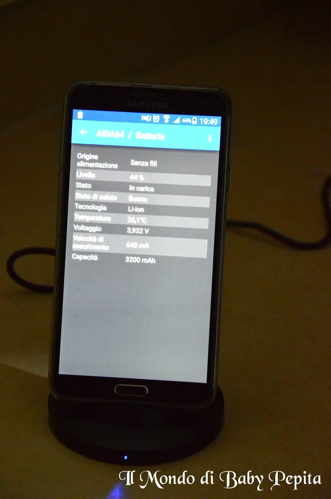

VIMVIP NEXTANY - Qi-Caricabatterie Wireless
 Ancora una volta torno a parlarvi di una collaborazione amazonQuesta volta il venditore VIMVIP NEXTANY mi ha dato l'opportunità di provare un articolo per me nuovo. .
Ancora una volta torno a parlarvi di una collaborazione amazonQuesta volta il venditore VIMVIP NEXTANY mi ha dato l'opportunità di provare un articolo per me nuovo. .

 Ormai nessuno vive più senza uno smartphone, un telefono cellulare carico è sempre ciò che cerchiamo ma non sempre è comodo il filo o comunque spesso e volentieri capita che non funzionino e iniziamo ad innervosirci.Magari torniamo a casa e la prima cosa che facciamo è quella di attaccare il telefono alla presa e aspettare che si carichi per l'indomani, poi arriviamo al mattino e ci accorgiamo che non ha caricato, o non abbiamo attaccato il filo nel modo giusto, quindi non possiamo prendercela che con noi stessi.
Ormai nessuno vive più senza uno smartphone, un telefono cellulare carico è sempre ciò che cerchiamo ma non sempre è comodo il filo o comunque spesso e volentieri capita che non funzionino e iniziamo ad innervosirci.Magari torniamo a casa e la prima cosa che facciamo è quella di attaccare il telefono alla presa e aspettare che si carichi per l'indomani, poi arriviamo al mattino e ci accorgiamo che non ha caricato, o non abbiamo attaccato il filo nel modo giusto, quindi non possiamo prendercela che con noi stessi.
Questo caricabatteria invece è proprio comodo per questo. .E' una base con 3 bobine di lunga durata adatto a telefoni cellulari come:Samsung Galaxy S5-S6 S6 edge S4 Note4 Note4 edge Note3 Google LG Optimus G2 G3 Nexus4, 5, 6, 7, Nokia Lumia 920 e Moto Orologio z3 V 360, Sony Xperia, HTC Droid DNA HTC 8 x per fotocamera Pentax Wg-iii iPhone 6 6 Plus 5S/5.
ACCESSORI NELLA SCATOLA:
- il supporto ovviamente
- il cavo per ricaricare di 1 metro
- Libretto delle istruzioni (Inglese/Cinese)


COME FUNZIONA?Prima di tutto se non avrete uno dei telefoni indicati sopra bisognerà acquistare un ricevitore esterno ovvero un chip che metteremo appena sotto la cover purché sia a contatto con la batteria del telefono.
Dopodiché il gioco è fatto, bisognerà solo appoggiare lo smartphone sulla basetta sia orizzontale che verticale, assicurarsi che la luce spia del caricabatterie sia acceso et voilà.
Quindi basta con cavetti sotto i telefoni che ci intralciano, basterà posizionare questa basetta su una scrivania, un comodino o un piano da lavoro e sarà sempre pronta a ricaricare il nostro smartphone.
Inoltre si potrà subito notare che appena verrà appoggiato il cellulare dopo pochi minuti già inizia a caricare velocemente la batteria.
Tutto questo senza avere paura che il telefono sia messo che orizzontalmente che verticalmente non cadrà perché la base del supporto è in gomma antiscivolo e antiurto.


Prezzo: 19,99 € Concludendo:Prodotto davvero carino ed innovativo anche per ufficio se si fa un lavoro che bisogna per forza usare lo schermo smartphone anche con vivavoce.Dal disegn elegante e necessario, pratico e sicuro.Insomma lo consiglio davvero.Se vorrete acquistarlo potrete farlo QUIE noi ci leggiamo alla prossima recensione!
Concludendo:Prodotto davvero carino ed innovativo anche per ufficio se si fa un lavoro che bisogna per forza usare lo schermo smartphone anche con vivavoce.Dal disegn elegante e necessario, pratico e sicuro.Insomma lo consiglio davvero.Se vorrete acquistarlo potrete farlo QUIE noi ci leggiamo alla prossima recensione!